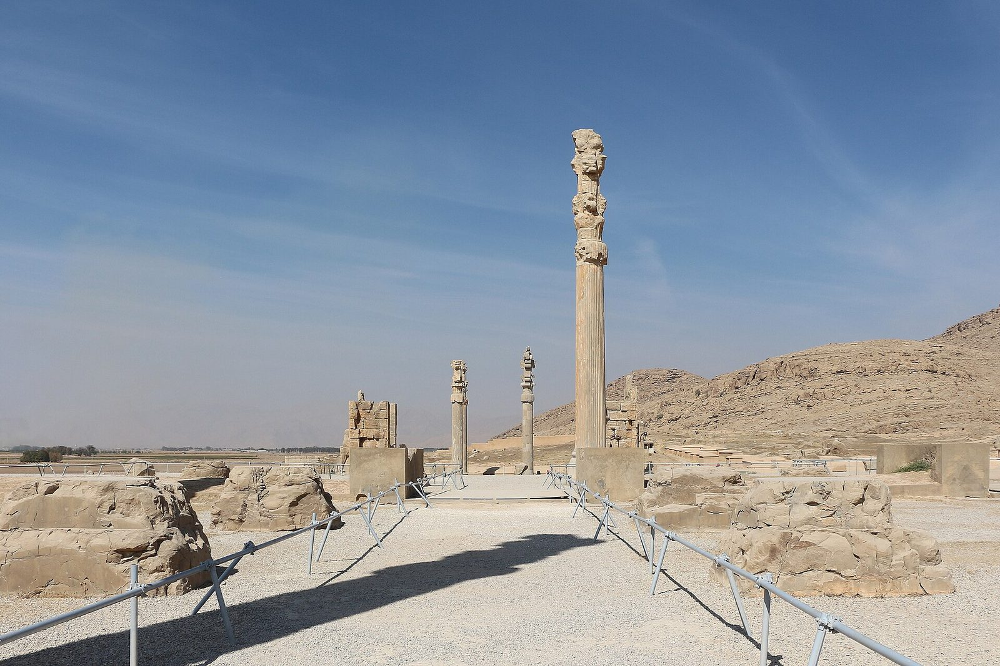
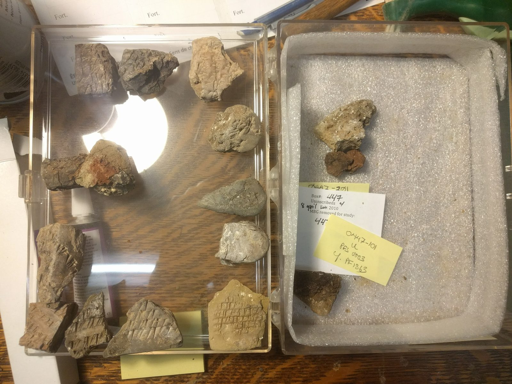
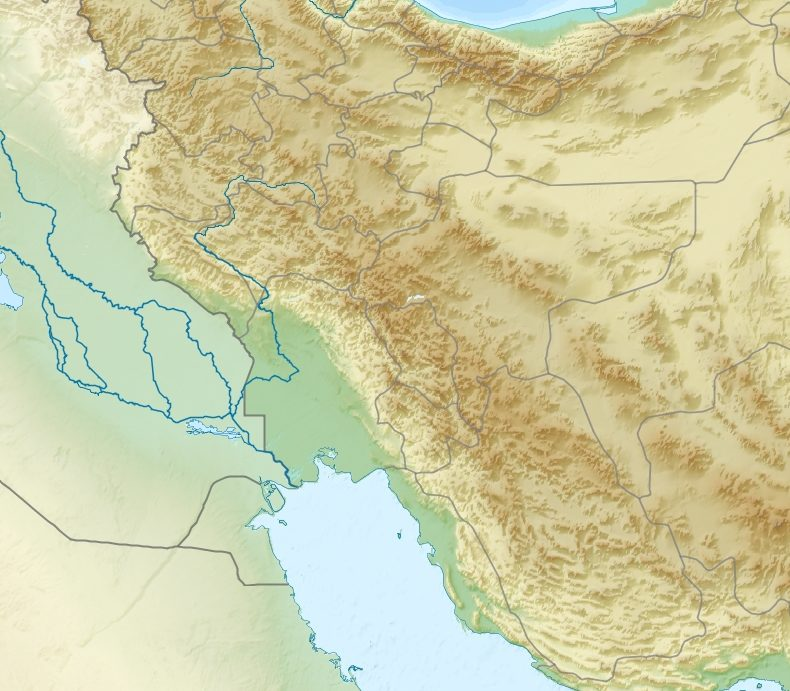
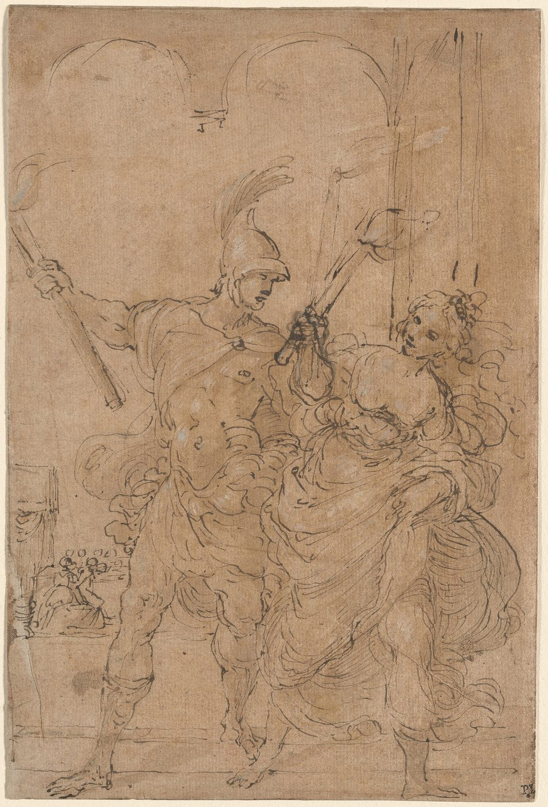

Unit 2 · Persepolis · Lesson 12
The burning of Persepolis: the ancient accounts
Four ancient writers tell how the palace burned in 330 BCE. How, and why, do their stories differ?
Year 11 Ancient History · Present with → or space · Read on a phone with R

Connect · 2 minutes · everyone writes one line · press K for the timer
Name one thing the Fortification Tablets tell us that the reliefs do not.

Name something the tablets record, then say why the royal reliefs leave it out. Use a precise term (ration, worker, administration).
The tablets record everyday administration: food stored and paid out as rations to people from the lowest workers to the king’s own family. The reliefs show the empire as the king wanted it to be seen, not who was fed or paid, or how much.
Today: four ancient writers tell how the palace burned in 330 BCE, and they disagree.
Learning intentions and success criteria · 2 minutes
Today’s goals
- understand the ancient accounts of the burning of Persepolis
- analyse how and why the accounts differ
- summarise what each of the four writers says happened
- explain the causes each writer gives
- explain one reason the accounts differ, using origin and purpose
Syllabus outcomes: AH-11-02 proposes ideas about the varying causes and effects of events and developments · AH-11-05 analyses different types of sources for evidence to support a historical account or argument · AH-11-06 explains differing interpretations and representations of the past · AH-11-07 communicates historical understanding, applying historical knowledge, terms and concepts. Life Skills: AH-LS-04 recognises causes and effects of events or developments · AH-LS-09 identifies different interpretations of the past.
Note-making · the routine for the whole course
How to structure your notes
questions and key terms, written after
short phrases, arrows (→ leads to), abbreviations (c. = about; A. = Alexander)
- 1Rule up the page firstA cue column about a quarter of the page wide; title and date at the top; room for a summary at the bottom.
- 2Listen and look, then writeDon’t copy while a slide is being explained. Phrases, not sentences.
- 3Write your own notes at each ✎ checkpointThen compare with the model notes, one row at a time. Add what you missed in a second colour.
- 4Write the cue questions afterwardsUse exam verbs: explain, analyse, assess. To revise, cover your notes and answer the cues.
- 5Finish with a three-sentence summaryTwo checkpoints today: the context and the four writers · what each writer says. The comparison grid goes on the facing page.
Key vocabulary · add to the unit word wall
Words for reading the four accounts
| From the unit list | Meaning |
|---|---|
| Gaugamela | The battle (331 BCE) in which Alexander defeated Darius III, opening the way to Persepolis. |
| Thaïs | An Athenian woman who, according to Diodorus, Curtius and Plutarch, urged the burning of the palace at a feast. |
| Vulgate tradition | The group of ancient Alexander histories (Diodorus, Curtius and others) thought to share a lost source, often identified as Cleitarchus. |
| Premeditated | Planned in advance. |
| Added for this lesson | Meaning |
|---|---|
| Parmenio | Alexander’s senior general (also spelled Parmenion). |
| comus | A noisy procession of revellers; in Diodorus, a victory procession in honour of Dionysus, god of wine. |
| courtesan | A woman who was the paid companion of wealthy men. |
| prudence | Good judgement: thinking carefully before acting. |
| retributive | Given as a punishment, to pay back a wrong. |
1 · The context · I do — the time line, 334–330 BCE
From Gaugamela to Persepolis, and the fire

Gaugamela Babylon Susa Persian Gates Persepolis Ecbatana- 334–332 BCEAlexander crosses into Asia (May 334), defeats Darius III at Issus (333), then takes Tyre and Egypt.
- 1 Oct 331Gaugamela: Darius III is defeated again, but escapes.
- Oct–Dec 331Babylon (22 October) and then Susa (December) surrender; Susa hands over its treasure.
- January 330Alexander forces the Persian Gates and reaches Persepolis. The city is looted and the treasure taken away.
- Jan–May 330He stays more than four months, through the winter.
- about May 330The palace burns. The army marches north to Ecbatana.
- July 330Darius III is killed by his own men.
Why did Alexander stay so long at Persepolis? What does Plutarch say?
Plutarch: “Wishing to refresh his soldiers (for it was winter time), he spent four months in that place.” Keep the long stay in mind: it matters when we ask whether the fire was planned.
1 · The context · I do — think aloud: how far from the event, and whose accounts?
Four writers, centuries later, using histories that are now lost
… in my opinion the narratives of Ptolemy and Aristobulus are more worthy of credit than the rest; Aristobulus, because he served under king Alexander in his expedition, and Ptolemy, not only because he accompanied Alexander in his expedition, but also because he was himself a king afterwards, and falsification of facts would have been more disgraceful to him than to any other man.
Arrian, Anabasis of Alexander, Preface · trans. E. J. Chinnock (1884)
Diodorus is the closest in time. Does that make him the most reliable?
Not on its own. None of the four saw the fire; all of them depend on lost histories written within a few decades of it. Whose account a writer followed, and why he wrote, matter more than his date.
Why does Arrian trust Ptolemy? Is his reason convincing?
Ptolemy was on the campaign and later a king, so lying would have shamed him. But a king also had a reputation to protect: being there does not make a writer neutral.
Notes checkpoint 1 of 2
The context and the four writers
2 · Reading the accounts · supported reading 1 of 4 · read together, then annotate
Arrian: a deliberate act, against advice
He burnt down the Persian palace, though Parmenio advised him to preserve it, for many reasons, and especially because it was not well to destroy what was now his own property, and because the men of Asia would not by this course of action be induced to come over to him, thinking that he himself had decided not to retain the rule of Asia, but only to conquer it and depart. But Alexander said that he wished to take vengeance on the Persians, in retaliation for their deeds in the invasion of Greece, when they razed Athens to the ground and burnt down the temples. He also desired to punish the Persians for all the other injuries they had done the Greeks. But Alexander does not seem to me to have acted on this occasion with prudence; nor do I think that this was any retributive penalty at all on the ancient Persians.
Arrian of Nicomedia, a Greek historian and Roman senator, 2nd century CE, who based his history mainly on Ptolemy and Aristobulus · trans. E. J. Chinnock (1884)
Words: preserve = keep safe · induced to come over = persuaded to join · retaliation = paying back a wrong · prudence = good judgement · retributive = given as punishment
Who does he say did it? Alexander himself, as a decision: he burnt the palace although his general advised against it.
What did Parmenio advise, and why? Keep it: it was now Alexander’s own property, and burning it would tell Asia he meant to conquer and leave, not rule.
What cause does Alexander give? Revenge for the Persian invasion of Greece, when Athens was razed and the temples burnt, and for other injuries to the Greeks.
What is Arrian’s own attitude? Critical: it was not prudent, and it punished no one who had harmed Greece, because the invaders lived about 150 years earlier.
2 · Reading the accounts · supported reading 2 of 4 · read together, then annotate
Diodorus: a victory feast, Thaïs and the torches
[70.1] Alexander described it to the Macedonians as the most hateful of the cities of Asia, and gave it over to his soldiers to plunder, all but the palaces. … [71.3] He felt bitter enmity to the inhabitants. He did not trust them, and he meant to destroy Persepolis utterly. … [72] Alexander held games in honour of his victories. He performed costly sacrifices to the gods and entertained his friends bountifully. While they were feasting and the drinking was far advanced, as they began to be drunken a madness took possession of the minds of the intoxicated guests. At this point one of the women present, Thaïs by name and Attic by origin, said that for Alexander it would be the finest of all his feats in Asia if he joined them in a triumphal procession, set fire to the palaces, and permitted women’s hands in a minute to extinguish the famed accomplishments of the Persians. This was said to men who were still young and giddy with wine, and so, as would be expected, someone shouted out to form the comus and to light torches, and urged all to take vengeance for the destruction of the Greek temples. … When the king had caught fire at their words, all leaped up from their couches and passed the word along to form a victory procession in honour of Dionysus. … She was the first, after the king, to hurl her blazing torch into the palace. … It was most remarkable that the impious act of Xerxes, king of the Persians, against the acropolis at Athens should have been repaid in kind after many years by one woman, a citizen of the land which had suffered it, and in sport.
Diodorus, a Greek historian who wrote a universal history about 60–30 BCE, probably following the lost history of Cleitarchus · trans. C. Bradford Welles, Loeb Classical Library (1963)
Words: enmity = hatred · Attic = from Attica, the land of Athens · comus = a victory procession with torches and music · impious = disrespectful to the gods · acropolis = the citadel of Athens, with its temples · in sport = as a game
Who is blamed? Thaïs proposes the fire and throws the first torch after the king; Alexander, fired up by the guests, leads.
What causes are given? Drink at a victory feast, and vengeance for the destruction of the Greek temples.
Was it only a drunken whim? Not quite: before the feast, Diodorus says Alexander hated the city and meant to destroy it utterly.
What is Diodorus’s attitude? He tells it as a dramatic turn of fortune: one Athenian woman repays the Persians, “in sport”.
2 · Reading the accounts · supported reading 3 of 4 · read together, then annotate
Plutarch: Thaïs’s speech, and two versions
After this, as he was about to march forth against Dareius, it chanced that he consented to take part in a merry drinking bout of his companions, at which women also came to meet their lovers and shared in their wine and revelry. The most famous among these women was Thaïs, an Athenian, the mistress of Ptolemy, who was afterwards king. She, partly in graceful praise of Alexander, and partly to make sport for him, as the drinking went on, was moved to utter a speech which befitted the character of her native country, but was too lofty for one of her kind. She said, namely, that for all her hardships in wandering over Asia she was being requited that day by thus revelling luxuriously in the splendid palace of the Persians; but it would be a still greater pleasure to go in revel rout and set fire to the house of the Xerxes who burned Athens, she herself kindling the fire under the eyes of Alexander, in order that a tradition might prevail among men that the women in the train of Alexander inflicted a greater punishment upon the Persians in behalf of Hellas than all her famous commanders by sea and land. As soon as she had thus spoken, tumultuous applause arose, and the companions of the king eagerly urged him on, so that he yielded to their desires, and leaping to his feet, with a garland on his head and a torch in his hand, led them the way. … This is the way the deed was done, according to some writers; but others say it was premeditated. However, it is agreed that Alexander speedily repented and gave orders to put out the fire.
Plutarch of Chaeronea, a Greek biographer writing about 100 CE, using several earlier writers · trans. Bernadotte Perrin, Loeb Classical Library (1919)
Plutarch on his aim (Life of Alexander 1.2): “… it is not Histories that I am writing, but Lives …”
Words: Dareius = Darius III · requited = repaid · revel rout = a rowdy crowd of revellers · Hellas = Greece · premeditated = planned in advance · repented = was sorry · the Xerxes who burned Athens = the Persian king whose army burned Athens in 480 BCE
Who is blamed? Thaïs suggests it; the companions urge Alexander on; he yields and leads them with a torch.
What causes are given? A drinking party, and revenge: a greater punishment of the Persians on behalf of Greece.
Who was Thaïs? Why might it matter? An Athenian, the mistress of Ptolemy, later king: the same Ptolemy whose history Arrian followed.
What does Plutarch add at the end? That other writers say it was planned. He reports both versions, and says Alexander soon regretted it.
2 · Reading the accounts · supported reading 4 of 4 · read together, then annotate
Curtius: wine, Thaïs and regret
[5.7.1] But Alexander’s great mental endowments, that noble disposition, in which he surpassed all kings, … were sullied by an excessive love of wine. … [5.7.3] One of these [women at his banquets], Thais by name, herself also drunken, declared that the king would win most favour among all the Greeks, if he should order the palace of the Persians to be set on fire; that this was expected by those whose cities the barbarians had destroyed. When a drunken strumpet had given her opinion on a matter of such moment, one or two, themselves also loaded with wine, agreed. The king too, more greedy for wine than able to carry it, cried: “Why do we not, then, avenge Greece and apply torches to the city?” All had become heated with wine, and so they arose when drunk to fire the city which they had spared when armed. The king was the first to throw a firebrand upon the palace, then the guests and the servants and courtesans. … [5.7.10–11] The Macedonians were ashamed that so renowned a city had been destroyed by their king in a drunken revel … It is certain that Alexander himself, as soon as sleep had restored his senses after he had been overcome by drunkenness, regretted what he had done and said that the Greeks would have been more severely avenged upon the Persians, if these had been forced to see Alexander on the throne and in the palace of Xerxes.
Curtius Rufus, a Roman writing in Latin in the 1st century CE (probably about 40–80 CE), probably following Cleitarchus · trans. J. C. Rolfe, Loeb Classical Library (1946)
Words: endowments = natural gifts · sullied = stained · strumpet = an insulting old word for a woman who sells sex · firebrand = a burning piece of wood
Who is blamed? Thaïs, drunk, suggests it; Alexander throws the first firebrand himself.
What causes are given? Wine above all, and revenge: the Greeks whose cities had been destroyed expected it.
What is Curtius’s attitude? Moral disapproval: a great king spoiled by wine, and contempt for Thaïs.
How does Alexander feel afterwards? Once sober, he regretted it, but even his regret is about revenge: the Greeks would have been “more severely avenged” if the Persians had been forced to see him on the throne.
Notes checkpoint 2 of 2
What each writer says happened
3 · Comparing the accounts · We do — the class fills the grid · cold call each cell
The comparison grid: Arrian and Diodorus
| Writer | Arrian | Diodorus |
|---|---|---|
| Date | 2nd century CE · about 460 years after | about 60–30 BCE · about 270–300 years after |
| Sources used | Ptolemy and Aristobulus, officers on the campaign (his preface) | earlier histories, probably Cleitarchus (lost) |
| Cause given | revenge for the Persian invasion of Greece: Athens razed, the temples burnt | drink at a victory feast; Thaïs’s idea; vengeance for the Greek temples |
| Alexander’s state of mind | deliberate: he hears Parmenio’s advice and overrules it (Arrian mentions no feast or drink) | drunk, he “caught fire at their words”; but he already hated the city |
| Role of Thaïs | none: she is not mentioned | proposes it at the feast; throws her torch first, after the king |
| The writer’s purpose | a history that judges Alexander: the act was not done “with prudence” (elsewhere he is “not ashamed to admire Alexander himself”) | a universal history, told as drama: one Athenian woman repays Persia “in sport” |
The biggest difference so far: a considered decision, or a drunken feast?
3 · Comparing the accounts · You do · 6 minutes · press K for the timer
Your turn: complete the grid for Plutarch and Curtius
| Writer | Plutarch | Curtius |
|---|---|---|
| Date | about 100 CE · about 430 years after | 1st century CE · about 370–410 years after |
| Sources used | several earlier writers | probably Cleitarchus (lost) |
| Cause given | ||
| Alexander’s state of mind | ||
| Role of Thaïs | ||
| The writer’s purpose |
Fill the four empty rows for both writers, using the Plutarch and Curtius extracts. Quote two or three words as evidence in each cell.
Use your annotations on the Plutarch and Curtius extracts: “who is blamed” helps with Thaïs, “cause” with the cause, “attitude” with the purpose. The date and sources rows are done for you.
Why might Arrian, who admired Alexander, report a deliberate burning but criticise it, while the other three tell the Thaïs story? Think about each writer’s sources and purpose.
3 · Comparing the accounts · You do — check your grid · cold call before each row
Check your grid: Plutarch and Curtius
| Writer | Plutarch | Curtius |
|---|---|---|
| Cause given | Thaïs’s speech at a drinking party: punish the Persians “in behalf of Hellas”; but “others say it was premeditated” | wine above all, and Thaïs’s idea; Alexander cries “avenge Greece” |
| Alexander’s state of mind | merry and persuaded by applause; he “speedily repented” | drunk, “more greedy for wine than able to carry it”; regretted it when sober |
| Role of Thaïs | an Athenian, “the mistress of Ptolemy”; her speech starts it | “herself also drunken”; Curtius scorns her as a “strumpet” |
| The writer’s purpose | a biography to show character: he writes “not Histories … but Lives” | a moral lesson: Alexander’s great qualities “sullied by an excessive love of wine” |
Compare your cells: did you quote the words? Add what you missed in a second colour.
3 · Comparing the accounts · Writing focus · 6 minutes · I do → We do → apply
Writing focus: say exactly what each writer does
Says tells us nothing. Choose the verb for what the writer is doing, in the present tense; the events stay in the past. Neutral: states, records, reports · doubtful (only when you have reason to doubt): claims, alleges · interpretive: presents … as, portrays, attributes … to.
Not: “Plutarch said Alexander stayed four months because it was winter.”
Plutarch attributes Alexander’s long stay at Persepolis to the season, reporting that he wished “to refresh his soldiers (for it was winter time)”.
A worked example, written for this lesson, on the four-month stay (Plutarch 37.6, Perrin’s translation, from the time line), not on the fire.
Plutarch, Life of Alexander 1.2: “… it is not Histories that I am writing, but Lives …”. Which sentence attributes it accurately?
- APlutarch proves that he is writing Lives rather than Histories.
- BPlutarch claims that he is writing Lives rather than Histories.
- CPlutarch states that he is writing Lives rather than Histories.
- DPlutarch said that he writes Lives rather than Histories.
C reports what Plutarch tells his readers about his own book, neutrally, in the present tense. A: a statement of a writer’s aim proves nothing. B: claims signals doubt, and we have no reason to doubt Plutarch about his own book. D uses the vague said and the past tense for a source that still says it.
Open your difference sentence with a precise verb for each writer, in the present tense: Arrian presents … as …, Diodorus attributes … to …, Plutarch reports …, Curtius condemns …. Your Writing toolkit (booklet pages 3–4): attribution verbs.
3 · Comparing the accounts · You do · 5 minutes · press K for the timer
One sentence: the biggest difference, and one possible reason for it
Verb explain: say what differs and why (a possible reason) · Topic how the burning happened · Limits the four accounts; a reason from the origin or purpose of the sources · Do one sentence: the difference, a precise verb for each writer, then a hedged reason.
Explain the biggest difference between the accounts, and one possible reason for it, using the origin or purpose of the sources.
“Whereas Arrian presents the burning as …, Diodorus, Plutarch and Curtius describe …; this may be because …”
Write a second sentence that explains why Arrian, who admired Alexander, criticises the burning.
Whereas Arrian presents the burning as a deliberate act of revenge that Alexander chose against Parmenio’s advice, Diodorus, Plutarch and Curtius describe a drunken feast at which the Athenian Thaïs urged it; this may be because Arrian followed Ptolemy and Aristobulus, officers on the campaign, while Diodorus and Curtius probably followed Cleitarchus’s more dramatic history.
Check for understanding · hinge question · hold up your A, B, C or D card on “3, 2, 1, show”
Which statement is accurate?
- AAll four writers describe a fire that they saw for themselves
- BArrian describes a deliberate burning, as revenge for Greece
- CPlutarch describes a burning that was definitely an accident
- DDiodorus describes a burning that Parmenio himself began
A is wrong: they wrote about 270–470 years later, from earlier histories. C is wrong: Plutarch tells the feast story but adds that “others say it was premeditated”, and never calls it an accident. D is wrong: Diodorus’s account of the burning never mentions Parmenio; in Arrian, Parmenio advised against the burning.
Finish your notes If time · or at home
Summary: three sentences
- What do all four writers agree happened?
- How do their accounts differ?
- Why might they differ?
All four ancient writers agree that the palace at Persepolis was burned (in 330 BCE), that Alexander himself took part, and that revenge for what the Persians had done in Greece was given as a reason. They differ on how it happened: Arrian presents a deliberate act of revenge, chosen against Parmenio’s advice, whereas Diodorus, Plutarch and Curtius describe a drunken feast at which the Athenian Thaïs urged the burning. The differences probably come from the lost histories each writer used and from their purposes, since Arrian followed Ptolemy and Aristobulus, Diodorus and Curtius probably followed Cleitarchus, and Plutarch and Curtius used the story to show Alexander’s character.
Exit ticket · 3 minutes · before you leave
One question, two sentences
“This is the way the deed was done, according to some writers; but others say it was premeditated.”
What does this tell a historian about the sources Plutarch had?
Plutarch had more than one earlier account, and they disagreed: some told the feast story, others said the burning was planned. So the disagreement is older than Plutarch: it goes back to the lost histories he read. He reports both, though he tells the feast story at length.
Then check yourself against today’s three “I can” statements. Next lesson: deliberate or drunken? Testing the accounts against the archaeology and modern historians.
Practice and review · 1 of 4 · true, false, justify
True or false? Justify your answer
- 1Arrian says that Thaïs urged Alexander to burn the palace. False — Arrian’s history never mentions Thaïs: he says Alexander burnt it deliberately, against Parmenio’s advice.
- 2In Diodorus, “the most hateful of the cities of Asia” is Alexander’s own description of Persepolis. True — Diodorus reports that Alexander described it so to the Macedonians (17.70.1); it is not Diodorus’s own judgement.
- 3All four writers saw the palace burn. False — they wrote about 270–470 years later, from earlier histories that are now lost.
- 4Plutarch says that the burning was definitely an accident. False — he tells the feast story, but adds that “others say it was premeditated”.
- 5All four accounts link the burning to revenge for what the Persians had done in Greece. True — Arrian (Athens and the temples), Diodorus (the Greek temples), Plutarch (“in behalf of Hellas”) and Curtius (“avenge Greece”).
- 6Diodorus and Curtius probably drew on the same lost history, by Cleitarchus. True — probably: they belong to the ‘vulgate tradition’, histories thought to share a lost source, often identified as Cleitarchus.
Practice and review · 2 of 4 · writing
Write it as a historian
Write one sentence on something Arrian and Curtius agree on, and one way they differ.
Both Arrian and Curtius present Alexander himself as responsible for the burning and link it to revenge for Greece, but Arrian describes a deliberate decision, whereas Curtius blames wine and the urging of Thaïs.
Finish: “Arrian 3.18 is reliable for … but not for … because …”
Arrian 3.18 is reliable for the reason Alexander gave for the burning, revenge for Greece, as men who served with him probably recorded it, because Arrian followed Ptolemy and Aristobulus, but it is less reliable for what happened at any feast, because his sources may have left out a story that embarrassed one of them.
“Plutarch said that Thaïs makes a speech, which proves the fire was revenge for Greece.” Fix the verb, the tenses and the overclaim.
Plutarch reports that Thaïs made a speech at the drinking party, urging that the palace be burned to punish the Persians “in behalf of Hellas”. (A model, written for this lesson.)
Why might Arrian, who admired Alexander, report a deliberate burning but criticise it, while the other three tell the Thaïs story? Consider each writer’s sources and purpose.
Arrian’s version may reflect both his sources and his purpose. He followed Ptolemy and Aristobulus, and Plutarch calls Thaïs “the mistress of Ptolemy, who was afterwards king”, so a history by her partner may have left out a story in which she led a drunken king to burn the palace. Arrian also wrote to judge Alexander honestly: he says he was compelled to censure some of Alexander’s acts, but was “not ashamed to admire Alexander himself”, so a deliberate decision that he could criticise as lacking prudence fits his history. Diodorus and Curtius probably followed Cleitarchus, whose lost history told vivid stories, and Plutarch and Curtius wanted to show Alexander’s character, so the feast, the wine and the regret suited all three. The difference may therefore tell us as much about the writers and their sources as about what happened that night.
Practice and review · 3 of 4 · an account or a representation?
About 1,900 years later, an artist draws the scene

Which of the four accounts could the artist have followed? Which detail shows it?
Diodorus, Plutarch or Curtius, not Arrian. The woman with a torch beside Alexander is Thaïs (the museum’s title names her), and Arrian never mentions her: the artist followed the feast story.
Is the drawing evidence for what happened in 330 BCE?
No. It was made in Italy about 1592, from the ancient texts and the artist’s imagination. It is good evidence for how one artist of his time pictured the story, and that he chose the Thaïs version.
What has the artist added that no ancient writer gives?
How everyone looked. Plutarch gives Alexander “a garland on his head”, but the artist gives him a plumed helmet; the clothes and the arched hall are the artist’s choices too.
Practice and review · 4 of 4 · cover your notes and answer from memory
Quick checks
- When did Alexander reach Persepolis, and when did the palace burn? He reached it in January 330 BCE, after Gaugamela, Babylon and Susa; the palace burned about four months later, about May 330, just before he marched on.
- Name the four ancient writers and roughly when each wrote. Diodorus (about 60–30 BCE), Curtius (1st century CE), Plutarch (about 100 CE) and Arrian (2nd century CE): about 270–470 years after the fire.
- Whose accounts did Arrian use, and whose did Diodorus and Curtius probably use? Arrian: Ptolemy and Aristobulus, officers on the campaign. Diodorus and Curtius: probably Cleitarchus. All three earlier histories are lost.
- What cause does Arrian give for the burning, and what does he think of it? Revenge for the Persian invasion of Greece, when Athens was razed and the temples burnt: the reason Arrian says Alexander gave. Arrian himself thinks Alexander did not act with prudence, and that it was no real punishment of the Persians who had done it.
- What part does Thaïs play in Diodorus, Plutarch and Curtius? At a drinking party she urges the burning: as revenge for Greece in Plutarch and Curtius; in Diodorus as Alexander’s finest feat, while another guest calls for vengeance. In Diodorus she throws her torch first, after the king.
- Explain one reason the accounts differ. They used different lost histories (Ptolemy and Aristobulus, or probably Cleitarchus), and wrote for different purposes, such as Plutarch’s aim to show character.
Sources and credits
Where everything comes from
Arrian, Anabasis of Alexander, Preface and 3.18 (also 6.30, 7.30 in the notes), trans. E. J. Chinnock (1884), public domain, from Project Gutenberg #46976.
Diodorus of Sicily, Library of History 17.70–72, trans. C. Bradford Welles, Loeb Classical Library, Vol. VIII (1963), with Welles’s notes; public domain, from LacusCurtius.
Plutarch, Life of Alexander 1, 37–38, trans. Bernadotte Perrin, Loeb Classical Library, Vol. VII (1919); public domain, from LacusCurtius.
Quintus Curtius Rufus, History of Alexander 5.7, trans. J. C. Rolfe, Loeb Classical Library, Vol. I (1946), quoted briefly, with credit; read from the Internet Archive scan.
Facts: Livius.org, ‘Alexander the Great’ 2.3–2.10, ‘Cleitarchus’, ‘Parmenion’, ‘Persepolis’ and ‘Persepolis: Apadana’, and the pages on Arrian, Diodorus, Curtius Rufus and Plutarch (© Livius.org); B. Thayer, LacusCurtius, introduction to Plutarch’s Life of Alexander; ISAC, University of Chicago, Persepolis Fortification Archive project page; National Gallery of Art, Washington, open data (object 55424); L. Prandi, ‘New Evidence for the Dating of Cleitarchus (POxy LXXI.4808)?’, Histos 6 (2012); Encyclopaedia Romana, ‘Thaïs’ (University of Chicago). Teacher resources: Decline and Alexander and The Destruction of Persepolis (class notebook ‘Persepolis’).
Outcomes and content: NSW Education Standards Authority (NESA), Ancient History 11–12 Syllabus (2024). © NESA.
- An Apadana column, looking north to the Gate of All Nations · Photo: Bernard Gagnon · CC BY-SA 4.0 · source
- Persepolis Fortification Archive tablets being studied in Chicago, 2017 · Photo: Pfa16 · CC BY-SA 4.0 · source
- Relief map of Iran (markers added) · Map: Uwe Dedering (Natural Earth data) · CC BY-SA 3.0 · source
- Lodovico Carracci, Alexander and Thaïs Setting Fire to Persepolis (drawing, probably about 1592) · Lodovico Carracci; image: National Gallery of Art, Washington (open access) · CC0 1.0 · source


All images are public domain or openly licensed, and were resized for the web. The markers and route on the relief map were added for this lesson. Each image is shared under the licence shown.